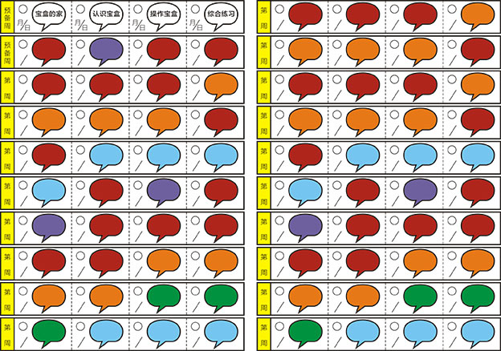
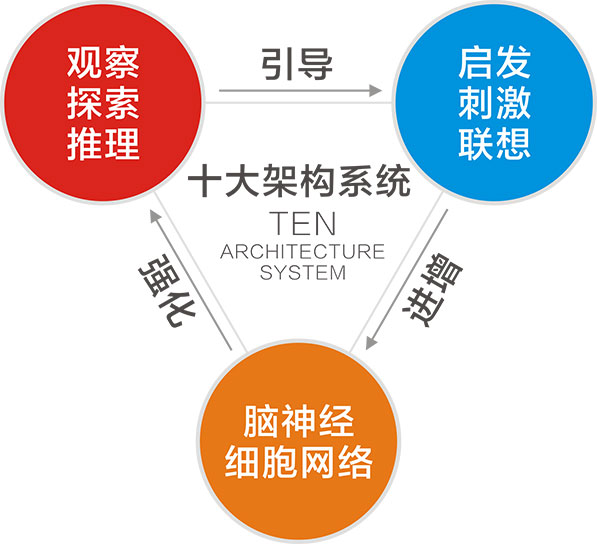
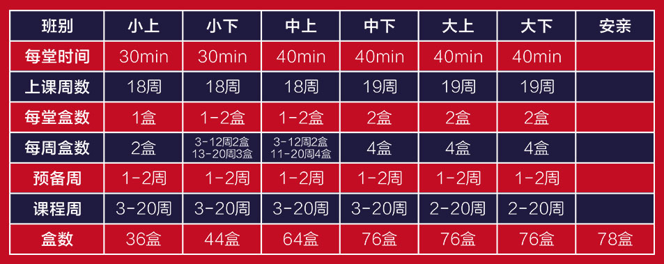
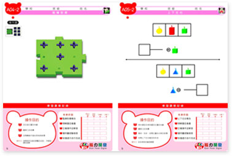
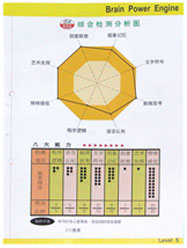

课程内容
Course content>
天才密码开发的教学课程内容包括智能启发、生活技能、数理演绎、语言表达、组合思考、美感创造等六大学习领域（其中以数理演绎为主要呈现方式），59项学习概念以及450个完全操作的自学宝盒，涵盖3—6岁的学龄前幼童三年完整的学习内容。从“天才密码”课堂寻宝开始，孩子顺着脚印寻找宝盒，以及自己摆弄教具直到最后把教具盒归回原位，整个过程就在培养孩子的秩序感和独立自理的能力。课程中孩子都处于游戏的状态，分星星是让孩子了解平均分概念，拼图则有助于孩子智能的启发、培养孩子的创造力和观察力……
“天才密码”课程通过各种不同颜色的教具，游戏的方式寓教于乐，让孩子亲自参与、动手操作各种教具，由孩子观察准备、酝酿思考、自我检查、到豁然开朗循序渐进的学习阶段，可调动孩子左右脑的全方面发展。
课程特点
Course characteristics>
1、何谓脑力开发？
所谓脑力开发就是重视幼童左右脑平衡发展的一项重要课程。主要的学习目标不在增加孩子的解题技巧，而是在于提升孩子的学习潜能与习惯主动思考的模式建立，以应付未来多变的环境需要。
2、天才密码脑力开发的六大领域？
天才密码脑力开发的六大领域包含有智能启发、数理演绎、组合思考、生活技能、语言表达与美感创造六大学习领域。
3、天才密码脑力开发的教师研习？
天才密码脑力开发的教师均需要经过完整的课程研习，才可以指导上课。研习内容包括：天才密码脑力开发课程的设计原理、对脑力开发的概念讲述，教学演练与课程内容研讨，并不定期的举办教学观摩及成长课程。
在授课课程中，老师只是游戏的引导者，而不再是知识的传授者。孩子们要自己研究操作本，找出待解的问题，并通过独立操作教具来寻找答案，当他们遇到难题时，老师也只是引导他们思考，而不会告诉孩子答案，这样通过孩子独立思考和自主操作得出答案，才能给孩子留下深刻的印象。
4、天才密码脑力开发与蒙特梭利教学的异同点？
蒙特梭利教学强调透过感官学习、从操作中去体会以及尊重彼此的人际关系训练、秩序感的建立，都是天才密码脑力开发课程的教育目标，然而天才密码脑力开发更提供了循序渐进的自我学习课程，多样化的学习内容以及自我检测与立即鼓励回馈的机制，是极具有培养未来领导人物特质的优质课程。
5、天才密码脑力开发与传统幼儿教育课程的不同点？
传统的幼儿教育大多以教导幼儿许多的认知，以模仿的方式帮助幼儿记得许多事情。而天才密码脑力开发却是藉由题目的设计
课程模式
Course characteristics<
天才密码脑力开发的上课是经由孩子自行操作教具，以教具所设计出来的各式题本，藉由观察准备、酝酿思考、自我检查、到豁然开朗的循环学习阶段，达到真正具备『自学』的效果。
天才密码脑力开发并不完全限制孩子的上课时间，但为顾及孩子的专注力与学习兴趣，通常我们会建议一个星期两次课，每次课程30 —50分钟之间，可自行操作 1 —2个宝盒。
课程特色
Course features>
特色一个人化课程规划表
特色二自主化的学习与生活常规的养成
特色三操作式的学习，刺激左右脑的均衡发展
特色四建立孩子以科学方法解决问题的习惯
-
自己看(观察)
-
自己找(思考)
-
自己想(判断)
-
自己动手(执行)
-
自己检验(检核)
特色五最贴心的年龄层进度设计
特色六专业化的评量系统
- 学习单
 结业证书
结业证书- 学习评量报告书